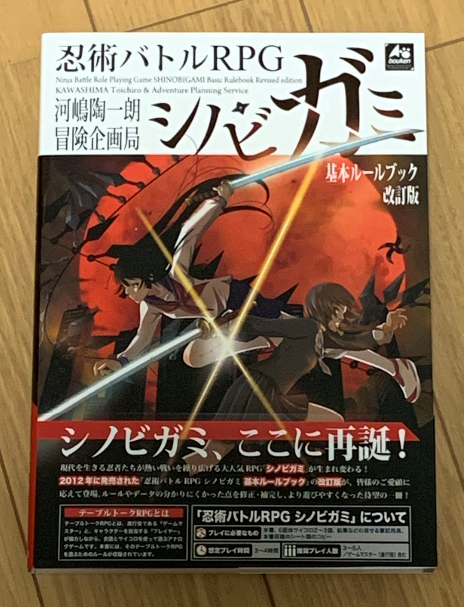
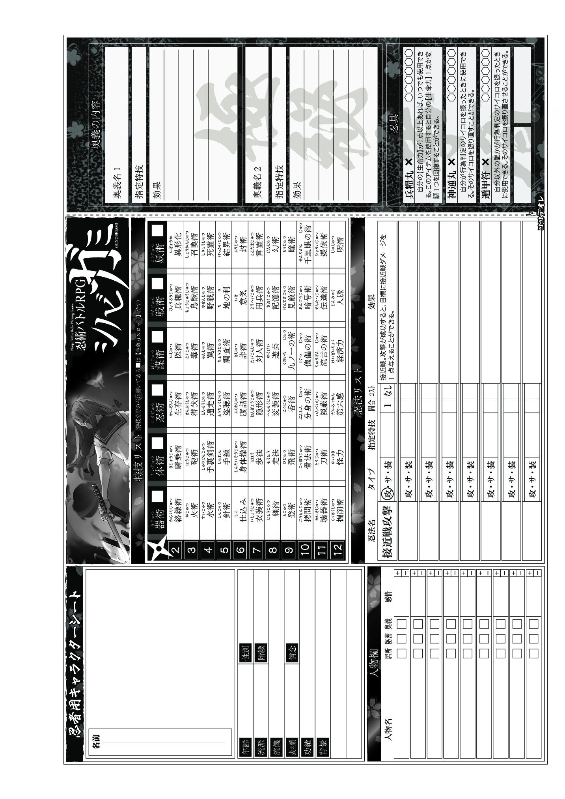
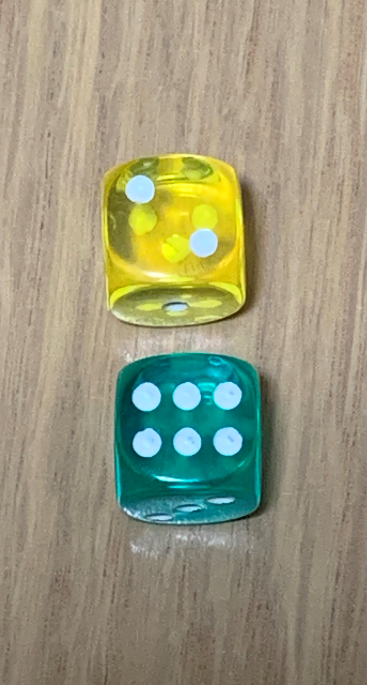

忍術バトルRPG シノビガミとは
「シノビガミ」は、日本のテーブルトークRPG作品のシリーズ。作者は河嶋陶一朗・冒険企画局。新紀元社から2009年4月に発売が開始された。
プレイヤーは、現代の日本を主な舞台に、忍者となって冒険をする。前半がリプレイパート、後半がルールパートの構成をとる。プレイヤーキャラクターは、それぞれ秘密を持っており、秘密の探り合いが展開を左右するようになっている。プレイヤーキャラクター同士が対立する秘密がある場合は、PVPの状況にもなる。（Wikipediaより引用）
上の画像は『忍術バトルRPG シノビガミ 基本ルールブック 改訂版』


遊ぶ上で必要なもの
シノビガミはルールブックが多く出ていますが、私は上の画像にもある『忍術バトルRPG シノビガミ 基本ルールブック 改訂版』が良いと思います。
シノビガミに必要なものは、ルールブック、ダイス・サイコロ、筆記用具です。
上の画像にあるキャラクターシートなどはルールブックに載っています。ダイス・サイコロは6面ダイスが2つあれば遊べます。